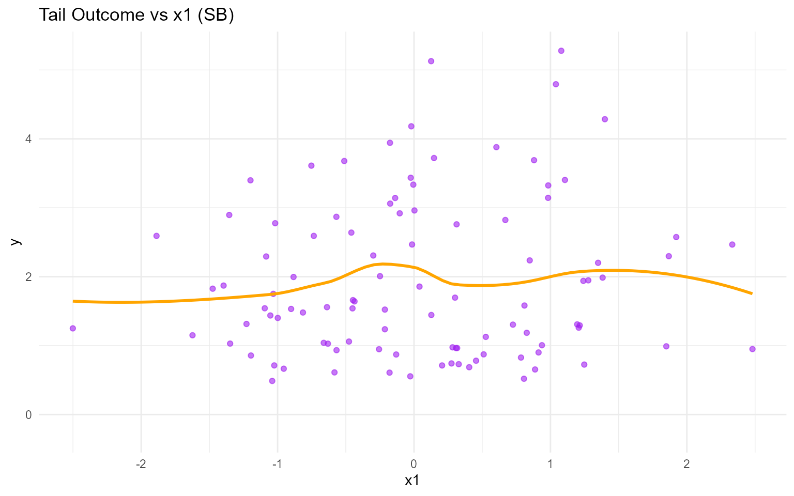
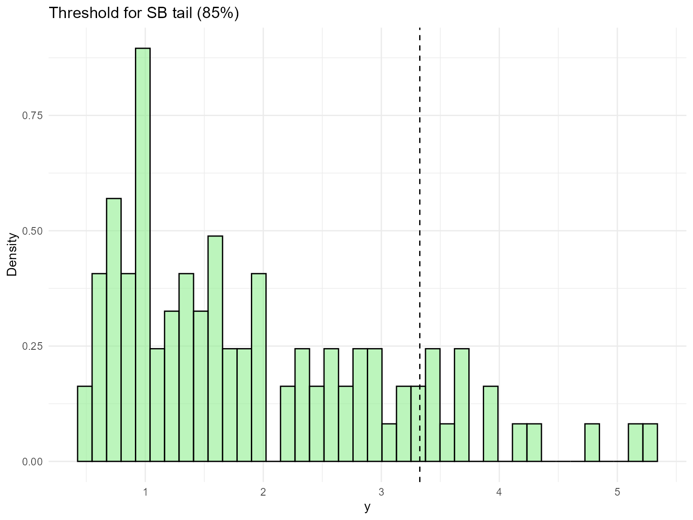
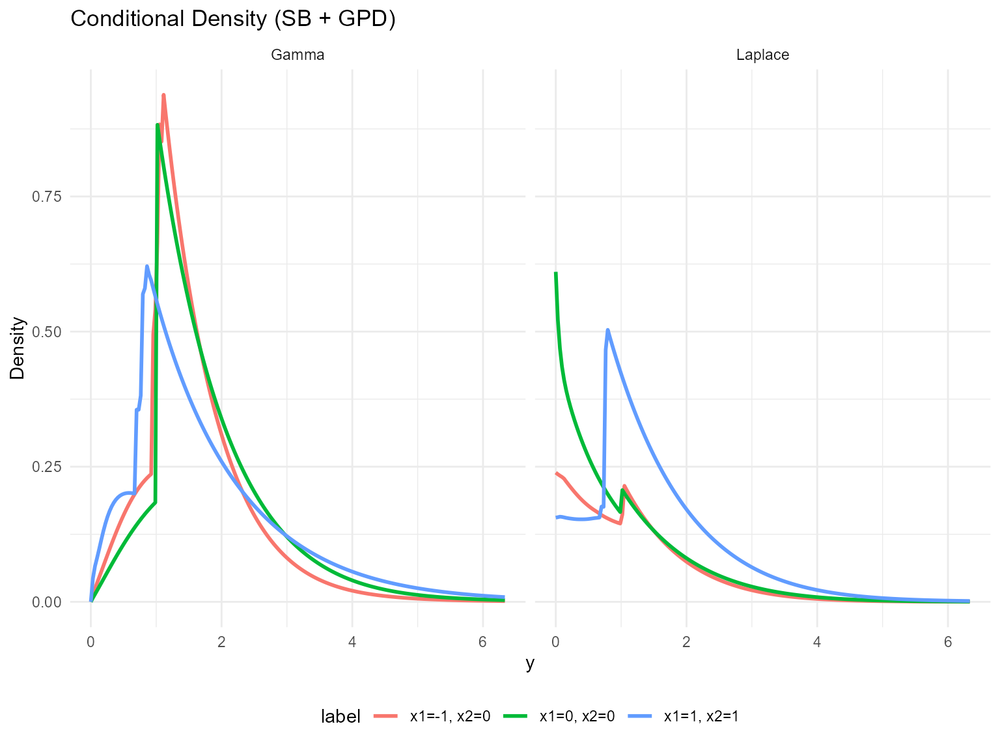
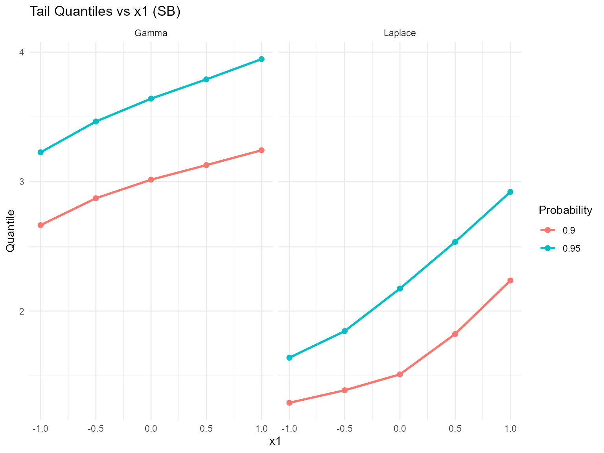
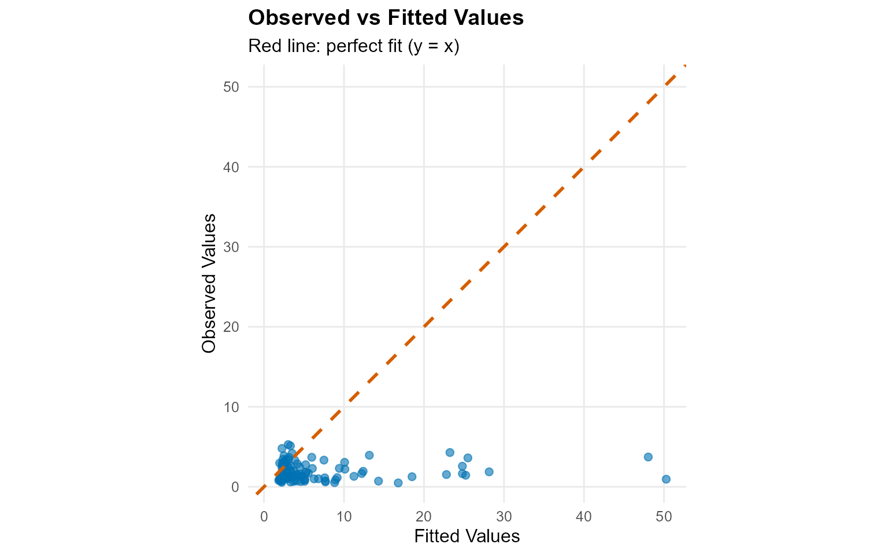
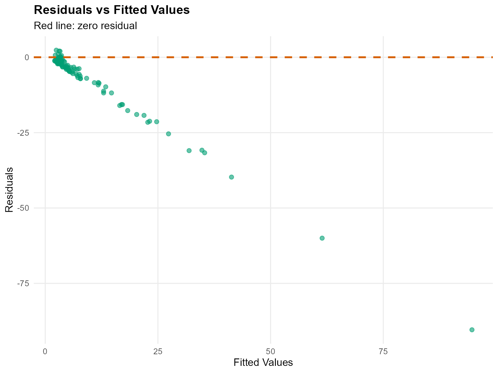
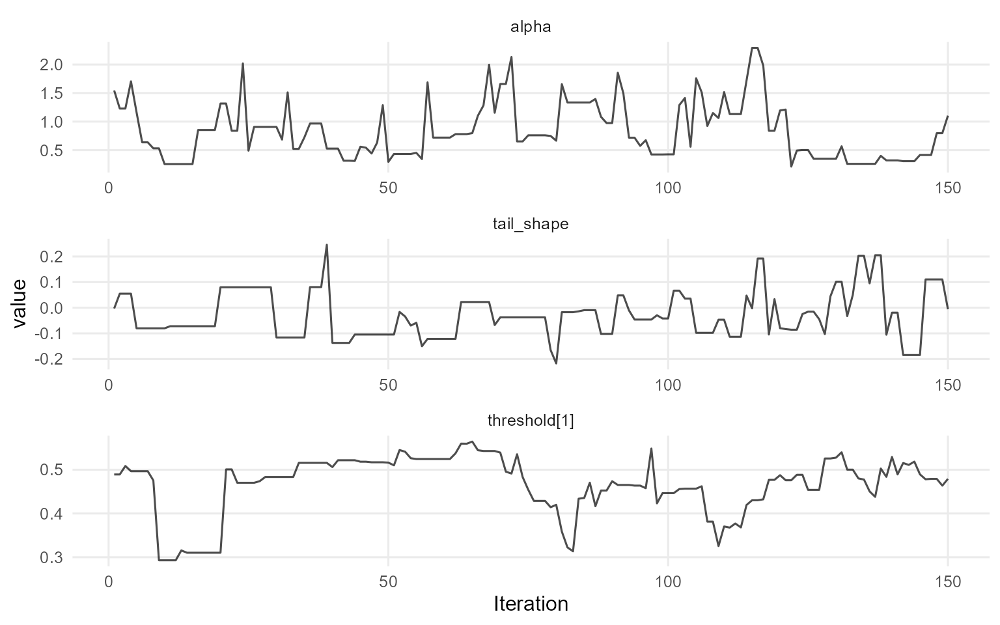
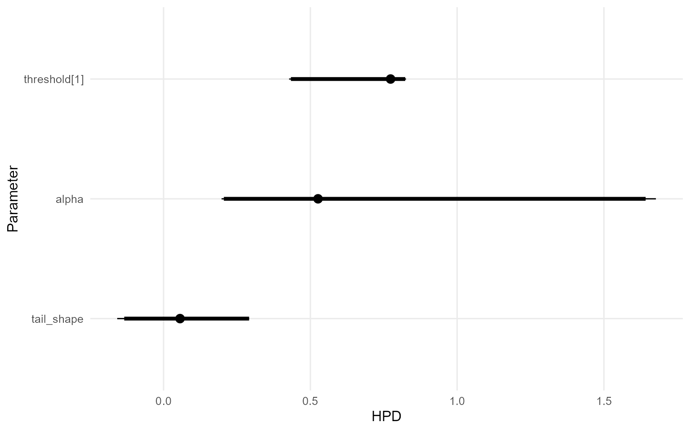

13. Conditional DPmixGPD with Stick-Breaking Backend
Source:vignettes/legacy/v13-conditional-DPmixGPD-SB.Rmd
v13-conditional-DPmixGPD-SB.RmdLegacy vignette (for the website / historical notes). These files may not match the current exported API one-to-one. Last verified: 2026-01-18.
For the up-to-date workflow, see the main package vignettes (Introduction, Model Spec, MCMC Workflow, Unconditional/Conditional/Causal, Backends, S3 Reference).
Theory (brief)
Conditional DP mixtures allow covariate-dependent kernels. Adding a GPD tail replaces the bulk kernel beyond a threshold, improving stability for extremes. The stick-breaking backend truncates the mixture to a fixed number of components.
Conditional DPmixGPD: Stick-Breaking Backend
Purpose: Apply fixed-component stick-breaking
truncation to covariate-dependent mixtures while keeping the GPD tail.
This vignette mirrors v10 but with the SB backend.
Data Setup
data("nc_posX100_p5_k4")
y <- nc_posX100_p5_k4$y
X <- as.matrix(nc_posX100_p5_k4$X)
if (is.null(colnames(X))) {
colnames(X) <- paste0("x", seq_len(ncol(X)))
}
summary_tbl <- tibble(
statistic = c("N", "Mean", "SD", "Min", "Max"),
value = c(length(y), mean(y), sd(y), min(y), max(y))
)
ggplot(data.frame(y = y, x1 = X[, 1]), aes(x = x1, y = y)) +
geom_point(alpha = 0.6, color = "purple") +
geom_smooth(method = "loess", color = "orange", fill = NA) +
labs(title = "Tail Outcome vs x1 (SB)", x = "x1", y = "y") +
theme_minimal()
| statistic | value |
|---|---|
| N | 100.000 |
| Mean | 1.942 |
| SD | 1.146 |
| Min | 0.488 |
| Max | 5.278 |
Threshold
u_threshold <- quantile(y, 0.85)
ggplot(data.frame(y = y), aes(x = y)) +
geom_histogram(aes(y = after_stat(density)), bins = 40, fill = "lightgreen", alpha = 0.6, color = "black") +
geom_vline(xintercept = u_threshold, linetype = "dashed", color = "black") +
labs(title = "Threshold for SB tail (85%)", x = "y", y = "Density") +
theme_minimal()
Model Specification
bundle_sb_cond_gpd_gamma <- build_nimble_bundle(
y = y,
X = X,
kernel = "gamma",
backend = "sb",
GPD = TRUE,
components = 5,
param_specs = list(
gpd = list(
threshold = list(mode = "link", link = "exp")
)
),
mcmc = mcmc
)
bundle_sb_cond_gpd_laplace <- build_nimble_bundle(
y = y,
X = X,
kernel = "laplace",
backend = "sb",
GPD = TRUE,
components = 5,
param_specs = list(
gpd = list(
threshold = list(mode = "link", link = "exp")
)
),
mcmc = mcmc
)MCMC Execution
fit_sb_cond_gpd_gamma <- load_or_fit("v13-conditional-DPmixGPD-SB-fit_sb_cond_gpd_gamma", run_mcmc_bundle_manual(bundle_sb_cond_gpd_gamma))
fit_sb_cond_gpd_laplace <- load_or_fit("v13-conditional-DPmixGPD-SB-fit_sb_cond_gpd_laplace", run_mcmc_bundle_manual(bundle_sb_cond_gpd_laplace))
summary(fit_sb_cond_gpd_gamma)MixGPD summary | backend: Stick-Breaking Process | kernel: Gamma Distribution | GPD tail: TRUE | epsilon: 0.025
n = 100 | components = 5
Summary
Initial components: 5 | Components after truncation: 2
WAIC: 278.291
lppd: -120.663 | pWAIC: 18.483
Summary table
parameter mean sd q0.025 q0.500 q0.975 ess
weights[1] 0.588 0.143 0.4 0.515 0.853 2.203
weights[2] 0.325 0.103 0.127 0.345 0.46 3.756
alpha 0.835 0.491 0.256 0.737 2.003 17.866
beta_scale[1, 1] 0.422 0.493 -0.328 0.332 1.534 16.309
beta_scale[2, 1] 0.092 0.485 -0.839 0.09 1.209 18.929
beta_scale[3, 1] -0.005 1.637 -3.301 -0.176 3.168 19.678
beta_scale[4, 1] -0.243 1.591 -2.998 -0.467 3.362 44.115
beta_scale[5, 1] 0.4 1.682 -2.729 0.452 3.936 42.088
beta_scale[1, 2] -0.1 1.021 -2.226 0.01 1.772 10.268
beta_scale[2, 2] 0.586 1.057 -2.287 0.745 2.891 10.8
beta_scale[3, 2] -0.464 1.769 -3.977 -0.373 2.49 42.544
beta_scale[4, 2] 0.746 1.772 -2.615 0.885 4.056 90.097
beta_scale[5, 2] -0.005 1.807 -3.136 0.056 3.527 38.811
beta_scale[1, 3] -0.247 0.428 -1.121 -0.149 0.363 5.856
beta_scale[2, 3] -0.511 0.802 -2.15 -0.255 0.467 10.117
beta_scale[3, 3] 0.113 1.817 -3.979 0.239 3.722 13.807
beta_scale[4, 3] -0.426 1.795 -3.602 -0.493 3.668 31.224
beta_scale[5, 3] -0.161 1.801 -3.253 -0.085 3.129 49.361
beta_scale[1, 4] 0.515 1.946 -2.436 0.811 3.371 2.141
beta_scale[2, 4] 1.414 1.964 -1.197 1.736 4.495 2.173
beta_scale[3, 4] 0.795 2.012 -3.007 0.819 4.266 15.331
beta_scale[4, 4] 0.034 1.845 -3.219 -0.336 4.295 22.417
beta_scale[5, 4] -0.279 1.509 -2.591 -0.386 2.324 119.267
beta_scale[1, 5] 0.9 0.384 0.357 0.831 1.58 7.446
beta_scale[2, 5] -0.135 0.41 -0.895 -0.171 0.71 12.302
beta_scale[3, 5] 0.411 1.626 -2.614 0.312 3.433 15.443
beta_scale[4, 5] 0.593 2.039 -3.535 0.752 4.3 31.322
beta_scale[5, 5] 0.522 1.728 -2.207 0.368 4.264 45.486
beta_tail_scale[1] 0.096 0.101 -0.05 0.078 0.279 40.776
beta_tail_scale[2] -0.084 0.178 -0.411 -0.067 0.323 55.972
beta_tail_scale[3] -0.075 0.092 -0.239 -0.078 0.119 50.729
beta_tail_scale[4] 0.48 0.24 0.062 0.494 0.957 20.701
beta_tail_scale[5] -0.01 0.089 -0.153 -0.005 0.147 13.988
beta_threshold[1] -0.031 0.077 -0.238 0 0.043 13.557
beta_threshold[2] -0.35 0.095 -0.576 -0.351 -0.204 6.89
beta_threshold[3] 0.172 0.039 0.095 0.175 0.233 17.012
beta_threshold[4] -0.138 0.146 -0.44 -0.13 0.019 2.406
beta_threshold[5] -0.183 0.063 -0.37 -0.156 -0.131 11.294
tail_shape -0.028 0.092 -0.185 -0.04 0.202 66.591
shape[1] 4.211 1.564 2.139 3.586 7.907 8.688
shape[2] 3.417 1.114 1.644 3.324 5.746 21.125
summary(fit_sb_cond_gpd_laplace)MixGPD summary | backend: Stick-Breaking Process | kernel: Laplace Distribution | GPD tail: TRUE | epsilon: 0.025
n = 100 | components = 5
Summary
Initial components: 5 | Components after truncation: 1
WAIC: 337.031
lppd: -143.1 | pWAIC: 25.415
Summary table
parameter mean sd q0.025 q0.500 q0.975 ess
weights[1] 0.944 0.044 0.86 0.94 1 10.611
alpha 0.674 0.427 0.198 0.526 1.677 9.21
beta_location[1, 1] 0.355 0.232 -0.049 0.37 0.815 53.842
beta_location[2, 1] 0.241 1.711 -3.337 0.288 3.201 22.384
beta_location[3, 1] 0.773 1.844 -3.243 0.628 4.167 64.133
beta_location[4, 1] -0.29 1.769 -3.549 -0.267 2.875 37.977
beta_location[5, 1] -0.054 2.064 -4.343 0.006 4.063 25.167
beta_location[1, 2] 0.847 0.423 0.043 0.833 1.674 41.316
beta_location[2, 2] -0.4 1.825 -3.203 -0.449 3.192 48.405
beta_location[3, 2] -0.112 1.848 -3.482 0.318 3.607 57.324
beta_location[4, 2] -0.266 1.787 -3.911 -0.241 3.185 77.397
beta_location[5, 2] 0.247 2.139 -3.709 0.442 4.431 32.747
beta_location[1, 3] -0.266 0.294 -0.785 -0.28 0.302 43.171
beta_location[2, 3] 0.066 1.43 -3.19 0.14 2.299 25.36
beta_location[3, 3] -1.069 1.883 -4.371 -1.308 2.534 21.457
beta_location[4, 3] 0.47 1.876 -3.423 0.811 3.332 57.547
beta_location[5, 3] -0.341 1.88 -4.237 -0.148 2.98 43.698
beta_location[1, 4] 5.707 0.901 4.126 5.545 7.617 33.601
beta_location[2, 4] 1.43 1.825 -1.98 1.406 5.041 13.813
beta_location[3, 4] 0.695 1.789 -2.738 0.682 3.519 31.353
beta_location[4, 4] 0.866 1.887 -3.281 1.035 3.603 16.349
beta_location[5, 4] 0.219 2 -3.441 0.085 3.984 38.281
beta_location[1, 5] 0.433 0.335 -0.137 0.439 1.128 13.592
beta_location[2, 5] 0.345 1.976 -3.133 0.186 4.245 15.141
beta_location[3, 5] -0.214 2.181 -4.208 -0.361 3.915 30.082
beta_location[4, 5] 0.694 1.699 -2.204 0.695 4.568 44.576
beta_location[5, 5] -0.105 2.151 -4.723 0.466 2.502 30.141
beta_tail_scale[1] 0.198 0.105 -0.056 0.204 0.405 99.046
beta_tail_scale[2] -0.005 0.206 -0.355 -0.016 0.36 27.302
beta_tail_scale[3] -0.079 0.12 -0.277 -0.1 0.128 32.465
beta_tail_scale[4] 0.295 0.281 -0.378 0.302 0.87 30.415
beta_tail_scale[5] -0.078 0.121 -0.353 -0.102 0.13 19.256
beta_threshold[1] -0.257 0.096 -0.409 -0.274 -0.103 2.182
beta_threshold[2] -0.203 0.07 -0.327 -0.192 -0.045 8.254
beta_threshold[3] 0.322 0.096 0.205 0.259 0.473 2.922
beta_threshold[4] -0.229 0.075 -0.355 -0.259 -0.093 7.888
beta_threshold[5] 0 0.118 -0.239 0.047 0.116 3.196
tail_shape 0.05 0.134 -0.158 0.056 0.291 17.905
scale[1] 1.133 0.29 0.629 1.129 1.841 14.876
params_sb_cond <- params(fit_sb_cond_gpd_gamma)
params_sb_condPosterior mean parameters
$alpha
[1] "0.835"
$w
[1] "0.588" "0.325"
$shape
[1] "4.211" "3.417"
$beta_scale
x1 x2 x3 x4 x5
comp1 "0.422" "-0.1" "-0.247" "0.515" "0.9"
comp2 "0.092" "0.586" "-0.511" "1.414" "-0.135"
comp3 "-0.005" "-0.464" "0.113" "0.795" "0.411"
comp4 "-0.243" "0.746" "-0.426" "0.034" "0.593"
comp5 "0.4" "-0.005" "-0.161" "-0.279" "0.522"
$beta_threshold
[1] "-0.031" "-0.35" "0.172" "-0.138" "-0.183"
$beta_tail_scale
[1] "0.096" "-0.084" "-0.075" "0.48" "-0.01"
$tail_shape
[1] "-0.028"Conditional Predictions
X_new <- rbind(
c(-1, 0, 0, 0, 0),
c(0, 0, 0, 0, 0),
c(1, 1, 0, 0, 0)
)
colnames(X_new) <- colnames(X)
y_grid <- seq(0, max(y) * 1.2, length.out = 200)
df_pred_gamma <- lapply(seq_len(nrow(X_new)), function(i) {
pred <- predict(fit_sb_cond_gpd_gamma, x = as.matrix(X_new[i, , drop = FALSE]), y = y_grid, type = "density")
data.frame(
y = pred$fit$y,
density = pred$fit$density,
label = paste("x1=", X_new[i, 1], ", x2=", X_new[i, 2], sep = ""),
model = "Gamma"
)
})
df_pred_laplace <- lapply(seq_len(nrow(X_new)), function(i) {
pred <- predict(fit_sb_cond_gpd_laplace, x = as.matrix(X_new[i, , drop = FALSE]), y = y_grid, type = "density")
data.frame(
y = pred$fit$y,
density = pred$fit$density,
label = paste("x1=", X_new[i, 1], ", x2=", X_new[i, 2], sep = ""),
model = "Laplace"
)
})
bind_rows(df_pred_gamma, df_pred_laplace) %>%
ggplot(aes(x = y, y = density, color = label)) +
geom_line(linewidth = 1) +
facet_wrap(~ model) +
labs(title = "Conditional Density (SB + GPD)", x = "y", y = "Density") +
theme_minimal() +
theme(legend.position = "bottom")
Tail Quantiles
X_grid <- cbind(x1 = seq(-1, 1, length.out = 5), x2 = 0, x3 = 0, x4 = 0, x5 = 0)
colnames(X_grid) <- colnames(X)
quant_probs <- c(0.90, 0.95)
pred_q_gamma <- predict(fit_sb_cond_gpd_gamma, x = as.matrix(X_grid), type = "quantile", index = quant_probs)
pred_q_laplace <- predict(fit_sb_cond_gpd_laplace, x = as.matrix(X_grid), type = "quantile", index = quant_probs)
quant_df_gamma <- pred_q_gamma$fit
quant_df_gamma$x1 <- X_grid[quant_df_gamma$id, "x1"]
quant_df_gamma$model <- "Gamma"
quant_df_laplace <- pred_q_laplace$fit
quant_df_laplace$x1 <- X_grid[quant_df_laplace$id, "x1"]
quant_df_laplace$model <- "Laplace"
bind_rows(quant_df_gamma, quant_df_laplace) %>%
ggplot(aes(x = x1, y = estimate, color = factor(index), group = index)) +
geom_line(linewidth = 1) +
geom_point(size = 2) +
facet_wrap(~ model) +
labs(title = "Tail Quantiles vs x1 (SB)", x = "x1", y = "Quantile", color = "Probability") +
theme_minimal()
Residuals & Diagnostics


plot(fit_sb_cond_gpd_gamma, family = "traceplot")
=== traceplot ===
plot(fit_sb_cond_gpd_laplace, family = "caterpillar")
=== caterpillar ===
Takeaways
- Conditional stick-breaking mixtures capture covariate-dependent bulk structure while the GPD handles extremes.
-
predict()andplot()remain consistent for densities, posterior-mean quantiles, and residuals. - Expect threshold-selected posterior-mean tail quantiles to shift
with
x1even whencomponentsis fixed. - Next: move into causal models starting with same-backend CRP (v12).